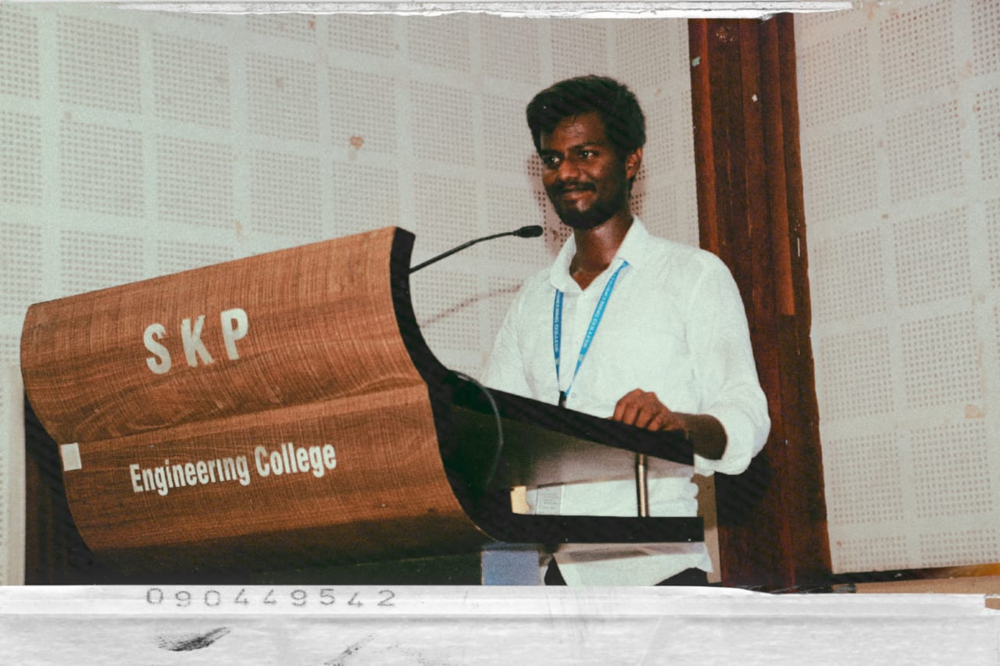
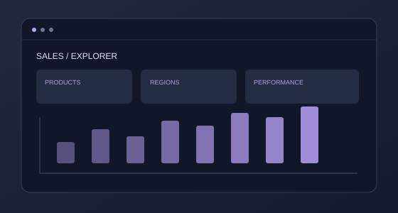
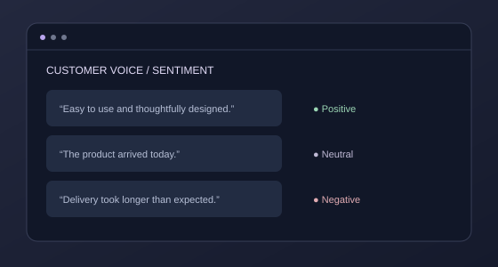
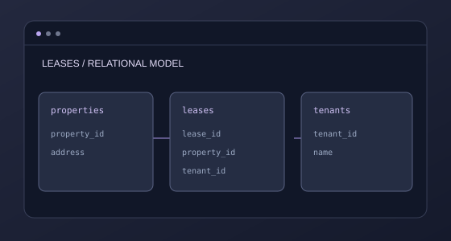
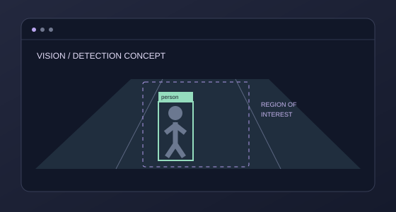
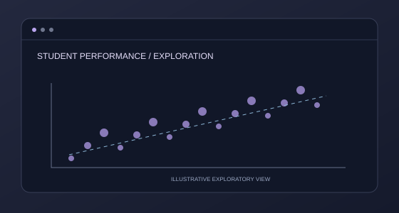

Data cleaning & EDA
Prepare, explore and understand datasets.

Detail-oriented Computer Science graduate with a strong foundation in Python, SQL, Data Science, Machine Learning, and Data Analysis. Skilled in developing Python solutions, writing SQL queries, performing data preprocessing and exploratory data analysis, and building machine learning models using real-world datasets. Strong analytical and problem-solving abilities focused on developing efficient data solutions.
Contact MeThe toolkit behind my thinking, analysis and project work.
Explore patterns, prepare reliable datasets and communicate insights.
Prepare, explore and understand datasets.
Turn business questions into visual reporting.
Investigate patterns and summarize findings.
Make performance easier to understand.
Python and machine learning techniques applied through project work.
Explore models for data-driven questions.
Interpret patterns in customer reviews.
Object detection with YOLOv8.
Prepare informative model inputs.
Relational thinking and practical SQL for working with connected data.
Bring related records together.
Build clear analytical queries.
Organize tables and relationships.
Investigate query execution and efficiency.
The tools behind my analysis and project workflow.
Data preparation and analysis.
Dashboards and business reporting.
Exploration and documented notebooks.
Database development and querying.
Core concepts connecting analysis with reliable data systems.
Extract, transform and load data.
Inspect completeness and consistency.
Give datasets useful structure.
Explore cloud-based data workflows.
AI-assisted exploration, coding and learning.
Explore ideas and explain concepts.
Experiment with AI workflows.
Support the coding workflow.
Explore repeatable workflows.
SKP Engineering College, Thiruvannamalai
CGPA: 8.20 / 10VRP Higher Secondary School, Villupuram
69.8%VRP Higher Secondary School, Villupuram
99.8%BigQuery & Looker for cloud-based data decision-making
Foundational knowledge in data science, analytics & visualization
Data governance, quality & organizational data management
Deploying, managing & scaling apps on Google Cloud
Building, training & & deploying ML models on AWS
SQL, Python & Power BI for advanced data analysis
A selection of projects, ideas and hands-on explorations.
Showing all projects

Illustrative previewAnalyzed product & region-wise sales using SQL & Excel. Built interactive Power BI dashboard with KPI tracking for revenue optimization.
View Project
Illustrative previewAnnotated and analyzed product reviews using NLP techniques to classify customer sentiment and extract actionable insights.
View Project Illustrative preview
Illustrative previewDeveloped a data-driven risk assessment system to identify vulnerable areas, estimate population and infrastructure exposure, and support early warnings and disaster preparedness to help minimize potential damage and protect lives.
View Project Illustrative preview
Illustrative previewConducted Exploratory Data Analysis (EDA) using Python and Pandas to analyze wildlife crime datasets, identify trends and patterns, and evaluate crime frequency, severity, animal impact, and seizure-related relationships.
View Project
Illustrative previewDesigned a full Lease Management System using MySQL with complex queries, joins, CTEs, and aggregate functions to manage property & tenant data.
View Project
Illustrative previewBuilt a real-time video analytics system using YOLOv8 object detection to identify unauthorized entries into restricted areas.
View Project
Illustrative previewAnalyzed academic data to identify performance trends, predict at-risk students, and generate insights for educators using Python & visualization.
View Project